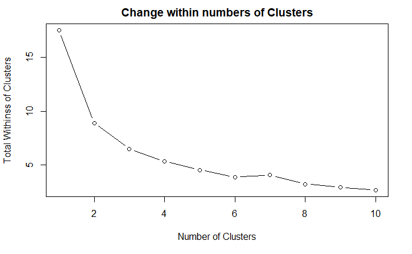
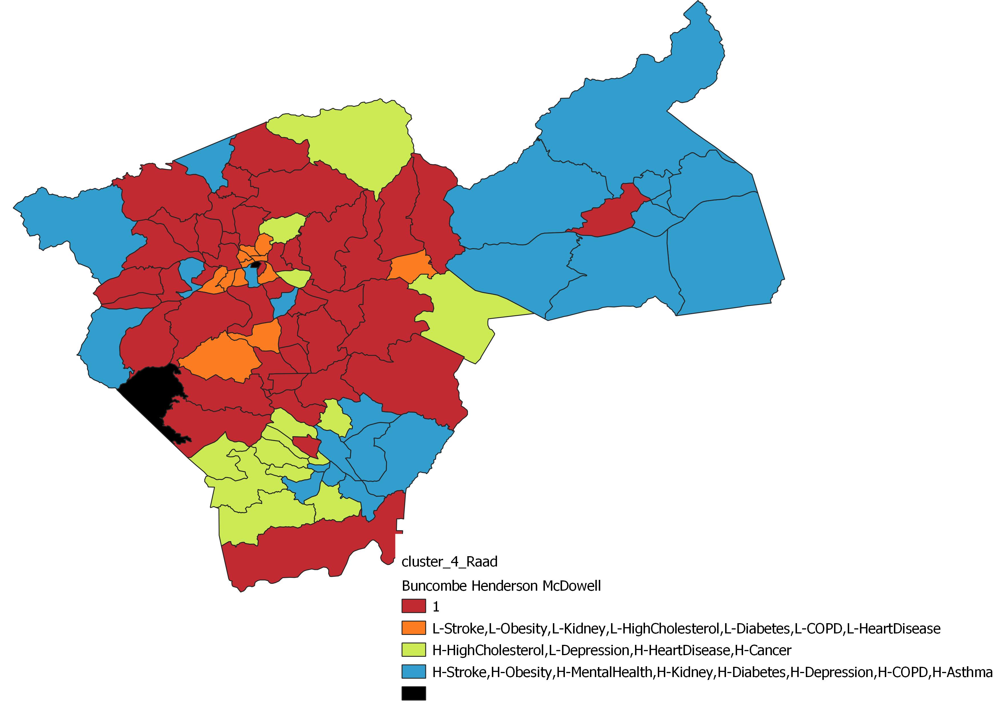
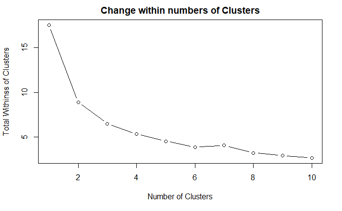
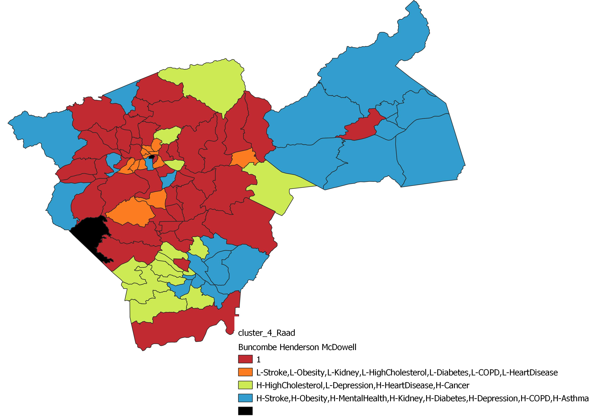

About Me
I am currently enrolled in Warren Wilson College, where I am getting a bachelor of arts in Math and Data Science. I plan on continuing my education and getting a Masters of urban and regional planning. I live in a liminal space between Swannanoa, North Carolina, and Denver, Colorado. I dream of being able to design cities to better serve the people and the communities that contain them. I grew up in an alternative living environment, known as cohousing, where community was an intentional aspect of the space's design. A fun fact about me is that I basketweave (not underwater) as a creative expression.
My ResumeProjects

NC DOT-Power BI Dashboard and Highway Event Heatmap
As an interntership I worked for the North Carolina Department of Transportation. I worked in two departments: the Signal System Timing and Operations department and the Transportation Mobility and Safety Division. At both I was given the opportunity to work with compelling mentors, complex data sets, and intresting projects. I made a Power BI dashbourd for aggregating the number of cars on a on ramp and I made a repeatable heatmap showing where congestion announcements were happening.
There is a ramp meter with 3 sensor groups at the westbound entrance ramp at 540 and Falls of Neuse in Ralegh. There is a meter group at the light letting people in, one on 540 measuring the speed and destiny of oncoming vehicles, and one at the beginning of the light meshing the length of the queue. The goal of this project was to make data-driven decisions about the long-term design of the road and find ways to use and visualize the changing data. The data used was three different .csv files of three sensor groups. They contain average traffic speed (MPH), volume, and occupancy. The data was cleaned in Python, and then it updated the Power BI page every week when new data was available.
There is an app, DriveWise, that gives truck drivers notifications if there is congestion ahead, similar to the app Waze, and a data source, Clear Gide, that keeps records of traffic speed. I used Drivewise data to make a heat map of Event data over Clear Guide seed data. To make the heat map, Drivewise data was converted from latitude and longitude data to mile markers using GIS buffers around mile marker data and joining Drivewise. A unique string was created using the mile marker followed by the date and time for both the Clear Guide data and the Drivewise data. A graph of Clear Guide was created with mile markers as the y-axis and time on the x-axis colored by average speed data, with Drivewise event data layered on top.
- Microsoft Power BI
- Python
- QGIS
- Plotly

An Application of Clustering: Addressing Food Insecurity in Western North Carolina
This was a group research project with Neylan Visnius, Mason Hollar and Advisers Holly Rosan and David Abernathy, researching the arrays of food insecurity in Western North Carolina, in the Counties of Buncombe, McoDowell and Henderson. Clustering is a data analysis technique that divides a dataset into distinct groups, with each group containing similar data points. We apply clustering to CDC social vulnerability and health conditions data to identify and map geographic regions in Western North Carolina that are most suitable for targeted outreach efforts by a local food bank. We ran the clustering algorithm on health and social vulnerability variables. After creating the clusters we used statistical analyses to determine what was going on in the clusters with RStudio. We also used QGIS and the census geographic boundary to map the clusters.
Social Vulnerability Variables Used:
- Below Poverty
- Housing Units
- Unemployed
- No High School
- Single Parent
- Minority
- Disabled
- No Vehicle
Health variables used:
- Stroke
- Kidney Disease
- Obesity
- High Cholesterol
- Diabetes
- COPD
- Asthma
- High Blood Pressure
- QGIS
- R Studio
- Canva
.png) 


